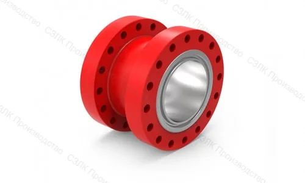
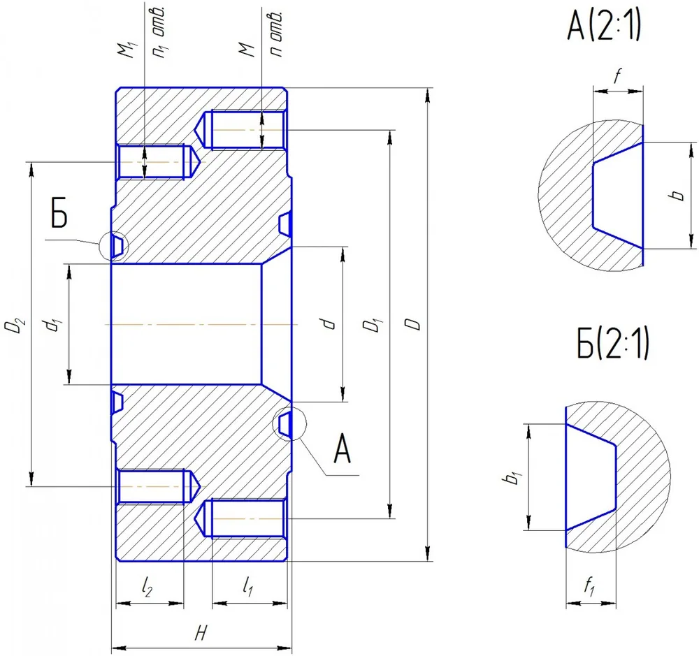
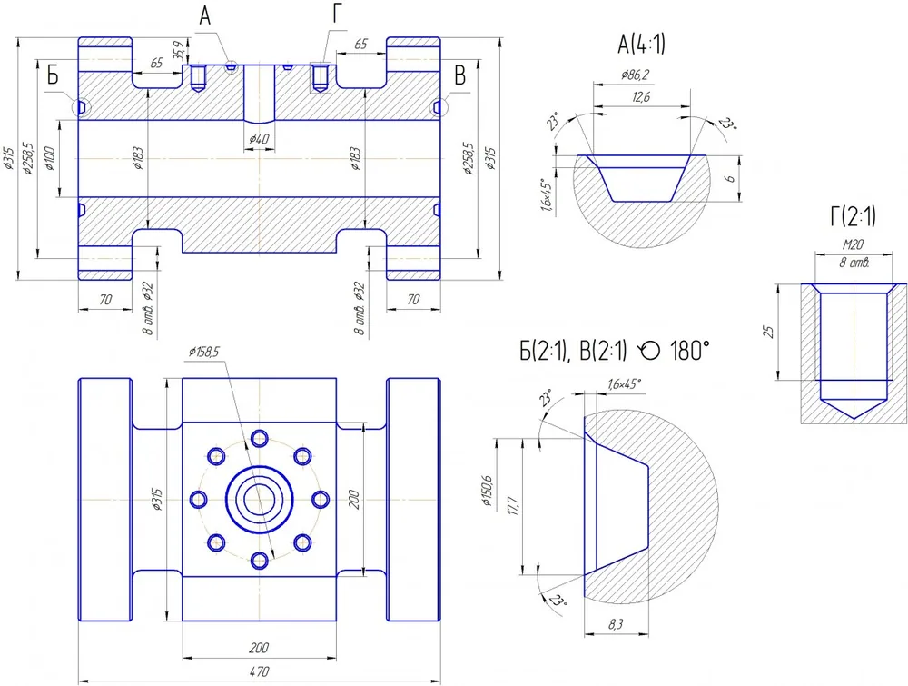
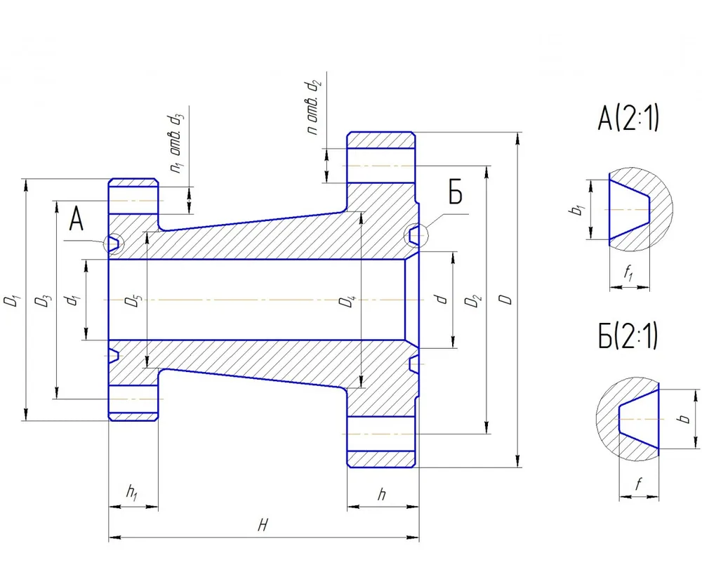

Соединительная и запорная арматура
Катушки, катушки переходные, адаптеры
Катушки, катушки переходные и адаптеры для изменения длины или направления трубопровода. Изготавливаются по индивидуальным размерам заказчика. Присоединительные размеры согласовываются в индивидуальном порядке и выполняются по ГОСТ 28919-91.
Типы изделий
Адаптеры
| Параметры | АдаптерУТИ.80х105-80х70 | АдаптерУТИ.100х70-80х70 | АдаптерУТИ.100х105-100х70 | АдаптерУТИ.180х21-180х14 |
|---|---|---|---|---|
| Наружный диаметр D (мм) | 288 | 315 | 360 | 380 |
| Диаметр делительной окружности центров отверстий под шпильки D1 (мм) | 230 | 258,5 | 290,5 | 317,5 |
| Диаметр делительной окружности центров отверстий под шпильки D2 (мм) | 216 | 216 | 258,5 | 292 |
| Диаметр проходного отверстия d (мм) | 78 | 103 | 103 | 180 |
| Диаметр проходного отверстия d1 (мм) | 78 | 78 | 103 | 180 |
| Обозначение резьбы под шпильки М | M27 | M27 | M36x3 | M27 |
| Обозначение резьбы под шпильки М1 | M24 | M24 | M27 | M24 |
| Количество отверстий под шпильки n (шт) | 8 | 8 | 8 | 12 |
| Количество отверстий под шпильки n1 (шт) | 8 | 8 | 8 | 12 |
| Длина резьбы под шпильки l1 (мм) | 35 | 35 | 45 | 35 |
| Длина резьбы под шпильки l2 (мм) | 30 | 30 | 35 | 30 |
| Тип прокладки (Вид А) | БХ154 | БХ155 | БХ155 | П45 |
| Ширина канавки b (мм) | 15,4 | 17,7 | 17,7 | 12 |
| Глубина канавки f (мм) | 7,5 | 8,3 | 8,3 | 8 |
| Тип прокладки (Вид Б) | БХ154 | БХ154 | БХ155 | П45 |
| Ширина канавки b1 (мм) | 15,4 | 15,4 | 17,7 | 12 |
| Глубина канавки f1 (мм) | 7,5 | 7,5 | 8,3 | 8 |
| Общая длина адаптера Н (мм) | 110 | 120 | 120 | 110 |
Катушки переходные
| Параметры | КатушкаУТИ.80х70-65х21 | КатушкаУТИ.80х70-50х21 | КатушкаУТИ.80х105-80х70 | КатушкаУТИ.80х70-65х70 | КатушкаУТИ.80х70-100х35 | КатушкаУТИ.80х70-80х70 | КатушкаУТИ.100х70-80х21 | КатушкаУТИ.80х70-65х14 | КатушкаУТИ.80х70-100х70 | КатушкаУТИ.100х105-80х70 |
|---|---|---|---|---|---|---|---|---|---|---|
| Наружный диаметр D (мм) | 270 | 270 | 288 | 270 | 270 | 315 | 270 | 270 | 360 | 360 |
| Наружный диаметр D1 (мм) | 245 | 215 | 270 | 230 | 310 | 270 | 242 | 190 | 315 | 270 |
| Диаметр делительной окружности центров отверстий под шпильки D2 (мм) | 216 | 216 | 230 | 216 | 216 | 258,5 | 216 | 216 | 290,5 | 290,5 |
| Диаметр делительной окружности центров отверстий под шпильки D3 (мм) | 190,5 | 165 | 216 | 184 | 241 | 216 | 190,5 | 149 | 258,5 | 216 |
| Большой диаметр шейки D4 (мм) | 142 | 142 | 154 | 142 | 142 | 183 | 142 | 142 | 195 | 195 |
| Большой диаметр шейки D5 (мм) | 124 | 105 | 142 | 121 | 162 | 142 | 127 | 100 | 183 | 142 |
| Диаметр проходного отверстия d (мм) | 78 | 78 | 78 | 78 | 78 | 103 | 78 | 78 | 103 | 103 |
| Диаметр проходного отверстия d1 (мм) | 65 | 52 | 78 | 65 | 103 | 78 | 78 | 65 | 103 | 78 |
| Диаметр отверстий под шпильки d2 (мм) | 28 | 28 | 32 | 28 | 28 | 32 | 28 | 28 | 39 | 39 |
| Диаметр отверстий под шпильки d3 (мм) | 28 | 25 | 28 | 25 | 36 | 28 | 25 | 23 | 32 | 28 |
| Количество отверстий под шпильки n (шт) | 8 | 8 | 8 | 8 | 8 | 8 | 8 | 8 | 8 | 8 |
| Количество отверстий под шпильки n1 (шт) | 8 | 8 | 8 | 8 | 8 | 8 | 8 | 8 | 8 | 8 |
| Полная высота тарелки h (мм) | 58 | 58 | 65 | 58 | 58 | 70 | 58 | 58 | 80 | 80 |
| Полная высота тарелки h1 (мм) | 50 | 46 | 58 | 51 | 62 | 58 | 46 | 37 | 70 | 58 |
| Тип прокладки (Вид А) | П27 | П24 | БХ154 | БХ153 | П39 | БХ154 | П31 | П26 | БХ155 | БХ154 |
| Ширина канавки b1 (мм) | 12 | 12 | 15,4 | 14,1 | 12 | 15,4 | 12 | 12 | 17,7 | 15,4 |
| Глубина канавки f1 (мм) | 8 | 8 | 7,5 | 6,8 | 8 | 7,5 | 8 | 8 | 8,3 | 7,5 |
| Тип прокладки (Вид Б) | БХ154 | БХ154 | БХ154 | БХ154 | БХ154 | БХ155 | БХ154 | БХ154 | БХ155 | БХ155 |
| Ширина канавки b (мм) | 15,4 | 15,4 | 15,4 | 15,4 | 15,4 | 17,7 | 15,4 | 15,4 | 17,7 | 17,7 |
| Глубина канавки f (мм) | 7,5 | 7,5 | 7,5 | 7,5 | 7,5 | 8,3 | 7,5 | 7,5 | 8,3 | 8,3 |
| Общая длина катушки Н (мм) | 250 | 250 | 250 | 250 | 250 | 250 | 250 | 250 | 350 | 350 |
Схематическое изображение

Адаптер переходной

Катушка переходная

Катушка переходная (конструкция)
* Варианты исполнения могут быть различными и согласовываются в индивидуальном порядке
Не нашли нужную позицию?
Напишите нам — подберём аналог и согласуем характеристики.